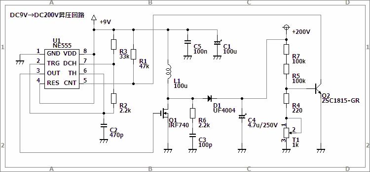
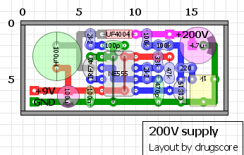

DC9V→DC200V昇圧回路
2010年03月05日 カテゴリー：実験等
真空管を使ったディストーションペダルを作ってみたいのですが、やはり本格的に真空管を動作させようと思うと高電圧が必要になってくるみたいです。Zvex Nano Headは小さいケースなのに真空管を高電圧で動作させているので何かヒントはないかとfreestompboxesで検索してみたところ、どうやらスイッチングによる昇圧を行っているらしいです。
今回の記事は以下のサイトを参考にしています。
・Build a nixie power supply(PDF)
…nixie tube（ニキシー管）という真空管の一種を動作させるための電源が紹介されています。
・Nixie HV Switching PSU
…こちらもニキシー管用電源です。ICは違いますがパーツについての解説があります。
・Class A Subminiature Tube Guitar Amp
…Nano Headと同じような真空管アンプが紹介されています。
回路図は下図です。

基本的には参考にしたサイトのパクリです。手持ちの部品にあわせて値が変わっているところがあります。今回は電源電圧は9V（秋月電子の12VスイッチングACアダプターをレギュレーターで9Vにしたもの）、出力電圧は200Vです。実際真空管をつないだときの出力電流は1.6mA程度でした。動作は完全に理解できているワケではないですが、以下にパーツに関する注意などを書いておきます。
[抵抗器]
全て0.25W(=1/4W)の抵抗を使っています。R5,R7は2本合わせて220kΩ/0.5Wを1本でもOKです。トリマーは右に回すほど出力電圧が大きくなるようにしています。
[コンデンサ]
C3とC4は耐圧250V以上のものにします（C3はテスターでは9V程度の電圧しかかかっていないのですが念のため）。他のコンデンサは耐圧16VでOKです。C4の容量は2.2uFでも多分OKです。
[コイル]
出力電流をどのぐらい流すかによりますが、1A程度電流を流せるものにすればOKでしょう（今回は100mAぐらいの電流が流れました）また、直流抵抗が小さいほうが良いです。今回使ったのは1.6A,0.16Ωのものです。
[ダイオード]
耐圧250V以上、許容電流1A以上のものを使います。また、逆回復時間が50ns以下のものが適切らしいです（ウルトラファーストリカバリダイオードとかいうらしい）。秋月電子にあるER504は35nsなんですが図体がデカいです。
[トランジスタ]
Q1は耐圧250V以上、低オン抵抗(Rdson)、低ゲート電荷量（Qg）、低出力容量（Coss）のNチャネルMOSFETを使います。若干暖かくなります（さわれる程度）が放熱器は必要なさそうです。参考サイトではIRF740やIRF644が使ってありますが、秋月電子にある2SK3234でもOKでした。
Q2は汎用のNPN型トランジスタなら大体何でもOKだと思います。
[IC]
555という古くからあるタイマーICです。バイポーラタイプのNE555(LM555)はOKですが、CMOS版(LMC555)はあまり電流が取れないためダメらしいです。
※出力電圧・出力電流を上げれば、上記の耐電圧や許容電流をさらに上げなければいけなかったり放熱が必要となったりする場合があります。
部品レイアウトは下図です。基板の裏側にジャンパーをつけるというイレギュラーなことをしています（小さくしたかったので…）。参考程度に。

今後この電源を使って真空管オーバードライブを作ってみる予定です。